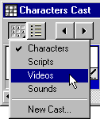

Using Director > Cast members and Cast windows > Using the Cast window > Using Cast window controls
Using Director > Cast members and Cast windows > Using the Cast window > Using Cast window controls |
Using Cast window controls
The controls along the top of the Cast window are the same for both the Cast List and the Cast Thumbnail views. You use the controls to change the cast displayed in the Cast window, the cast member selection, or the name of a cast member. You can also use them to move cast members and to open a cast member's Script window or the Property Inspector.

To change the cast displayed in the current Cast window:
Click the Cast button and choose a cast from the pop-up menu.
To open a cast in a new Cast window:
Right-click (Windows) or Control-click (Macintosh) the Cast button and choose a cast from the context menu.
To select the previous or next cast member:
Click the Previous Cast Member or Next Cast Member button.
To move a selected cast member to a new position in the Cast window (Thumbnail view) or to the Stage:
Drag from the Drag Cast Member button to the desired position in the Cast window or on the Stage.
This procedure is useful when the selected cast member has scrolled out of view.
To enter a cast member name:
Select a cast member and enter the name in the Cast Member Name box.
To edit a cast member script:
Select a cast member and click the Cast Member Script button.
To view cast member properties:
1 |
Select a cast member. |
2 |
Do one of the following: |
Click the Cast Member Properties button. |
|
Right-click (Windows) or Control-click (Macintosh) and choose Cast Member Properties from the context menu. |
|
Choose Window > Inspectors > Property. |
|
See Viewing and setting cast member properties.
To view the cast member number:
Refer to the Cast Member Number field.